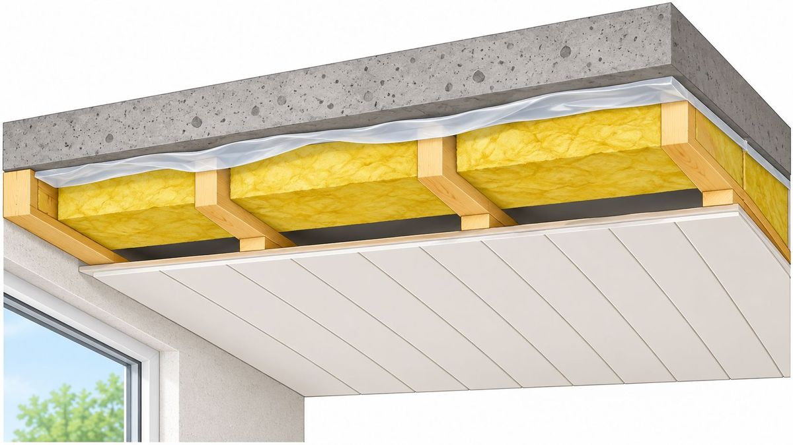

потолок на лоджии — это каркас из профиля 60×27 с шагом 400–600 мм, утеплитель 50–100 мм, пароизоляция и обшивка. ГКЛВ с покраской — 900–1 600 руб./м², ПВХ-панели — 600–1 200 руб./м², реечный алюминиевый — 1 400–2 600 руб./м². Потолок на лоджии 6 м² своими руками — 12 000–35 000 руб. Главная ошибка — утепление без пароизоляции: через одну зиму появляется конденсат и плесень по швам.
Конструкция: каркас, утепление, пароизоляция

| Слой | Толщина | Материал | Цена за м² |
|---|---|---|---|
| Каркас | 27–40 мм | профиль ПН/ПП 60×27 | 250–450 руб. |
| Утеплитель | 50–100 мм | минвата 80–120 кг/м³ или ЭППС | 350–1 400 руб. |
| Пароизоляция | 0,2 мм | плёнка с проклейкой стыков | 60–150 руб. |
| Обшивка | 9,5–12,5 мм | ГКЛВ или ПВХ | 350–900 руб. |
| Финиш | — | краска, натяжное полотно | 200–900 руб. |
Пароизоляция ставится со стороны тёплого помещения — снизу, под обшивкой. Если перепутать и поставить её сверху, влага из комнаты запирается в утеплителе, и он намокает.
Материалы обшивки
| Материал | Цена за м² | Плюсы | Минусы |
|---|---|---|---|
| ГКЛВ + покраска | 900–1 600 руб. | ровный, ремонтопригодный | боится протечек, нужна шпаклёвка |
| ПВХ-панели | 600–1 200 руб. | влагостойкие, быстрый монтаж | швы, выцветание на солнце |
| Реечный алюминий | 1 400–2 600 руб. | не боится влаги, современный вид | дороже, собирает пыль в швах |
| Натяжное полотно | 700–1 800 руб. | идеально ровное, скрывает каркас | провисает при перепадах температуры |
| Деревянная вагонка | 800–2 000 руб. | тёплый вид | требует обработки, боится влаги |
Для остеклённой, но неотапливаемой лоджии берут ПВХ или алюминий: ГКЛВ при минусовых температурах и конденсате размокает по кромкам. В отапливаемой лоджии ГКЛВ под покраску — лучший вариант по виду.
Утепление: минвата или ЭППС
| Материал | Толщина | Цена за м² | Когда |
|---|---|---|---|
| Минвата 80 кг/м³ | 50 мм | 350–550 руб. | отапливаемая лоджия |
| Минвата 120 кг/м³ | 100 мм | 700–1 100 руб. | холодный регион |
| ЭППС 50 мм | 50 мм | 550–800 руб. | влажный конденсат |
| Пенофол 10 мм | 10 мм | 200–400 руб. | только как дополнение |
Минвату ставят враспор между профилями без зазоров: щель 5 мм снижает теплоизоляцию на 10–15 %. Пенофол сам по себе не утеплитель — он отражает тепло, но не останавливает его потерю.
Каркас: шаг и крепление
| Параметр | Значение | Комментарий |
|---|---|---|
| Шаг основных профилей | 400–600 мм | 400 мм под ГКЛ, 600 мм под ПВХ |
| Подвесы | каждые 600–900 мм | прямые или пружинные |
| Отступ от плиты | 30–50 мм | для вентзазора |
| Крепление | дюбель 6×40, шаг 300 мм | в бетон — анкер-клин |
| Потеря высоты | 60–120 мм | каркас + утеплитель + обшивка |
Каркас опускает потолок на 60–120 мм. На лоджии с высотой 2,5 м это допустимо, на балконе 2,2 м — заметно. Альтернатива — бескаркасный монтаж ПВХ на клей по ровной плите.
Вентиляция и конденсат
Остеклённая лоджия — это буферная зона: влага из квартиры проходит через дверь и оседает на холодных поверхностях. Чтобы её не было, нужны приточный клапан в балконной двери или окне (1 500–4 000 руб.) и вентзазор 20–30 мм между утеплителем и остеклением.
| Проблема | Причина | Решение |
|---|---|---|
| Капли на потолке | нет пароизоляции | переборка обшивки |
| Плесень по швам | холодный мостик | дополнительное утепление |
| Наледь на остеклении | нет притока воздуха | клапан или щелевое проветривание |
Герметичная лоджия без притока — главная причина конденсата: влага не уходит, точка росы смещается внутрь, и потолок начинает «плакать» уже при −5 °C.
Смета лоджии 6 м²
| Позиция | Объём | Стоимость |
|---|---|---|
| Профиль и подвесы | 6 м² | 2 000–3 500 руб. |
| Утеплитель 50 мм | 6 м² | 2 100–4 800 руб. |
| Пароизоляция и скотч | 8 м² | 700–1 500 руб. |
| ГКЛВ или ПВХ | 6,5 м² | 2 300–5 800 руб. |
| Шпаклёвка, грунт, краска | — | 2 000–5 000 руб. |
| Работа (если не своими руками) | 6 м² | 5 000–15 000 руб. |
Итого 14 100–35 600 руб. ПВХ-панели дешевле ГКЛВ на 1 500–3 000 руб. за лоджию, но швы видны и через 5–7 лет панели выцветают на солнечной стороне.
Свет и выводы под потолком
Проводку под свет на лоджии прокладывают ДО обшивки: кабель ВВГнг-LS 3×1,5 мм² в гофре, выводы под точечные светильники на 100–150 мм ниже будущей плоскости потолка. Точечные светильники на лоджии берут IP44 и выше — при конденсате обычные IP20 окисляются за сезон.
| Элемент | Цена | Комментарий |
|---|---|---|
| Кабель 3×1,5 мм² | 55–90 руб./м | в гофре, 15–20 м на лоджию |
| Точечный светильник IP44 | 600–2 500 руб. | 4–6 шт. на 6 м² |
| Выключатель | 350–1 200 руб. | лучше у балконной двери |
| Монтаж точки | 500–900 руб. | с выводом и подключением |
Свет на 6 м² считают из 150–200 лк: это 4–6 светильников по 6–8 Вт или одна люстра 18–24 Вт. Если лоджия станет рабочим местом, добавляют линейный светильник над столом.
Натяжной потолок: когда уместен
Натяжное полотно на лоджии ставят, когда нужен идеально ровный потолок без шпаклёвки: монтаж занимает 3–4 часа, полотно не боится протечек сверху. Но каркас под него всё равно нужен — под утеплитель, а полотно натягивают на 30–50 мм ниже.
| Параметр | Значение |
|---|---|
| Потеря высоты | 80–140 мм с утеплением |
| Цена с монтажом | 700–1 800 руб./м² |
| Минусовая температура | полотно провисает ниже −10 °C |
| Срок службы | 10–15 лет |
На неотапливаемой лоджии натяжной потолок не ставят: при минусе ПВХ-полотно натягивается и провисает, а при возврате тепла может лопнуть по шву.
Порядок работ
- Разметить уровень потолка по лазеру, отбить линию по периметру.
- Закрепить направляющий профиль ПН по стенам, шаг дюбелей 300 мм.
- Выставить основные профили ПП на подвесах, проверить плоскость нитью.
- Уложить утеплитель враспор, без щелей.
- Смонтировать пароизоляцию с проклейкой стыков и заходом на стены 50 мм.
- Обшить каркас ГКЛВ или ПВХ, швы ГКЛ армировать лентой.
- Зашпаклевать, прогрунтовать, покрасить в 2 слоя.
Ошибки и их цена
| Ошибка | Последствие | Исправление |
|---|---|---|
| Нет пароизоляции | конденсат, плесень | демонтаж обшивки 5 000–15 000 руб. |
| Утеплитель с зазорами | мостики холода, наледь | переборка |
| ГКЛВ на неотапливаемой лоджии | размокание кромок | замена на ПВХ |
| Каркас без вентзазора | намокание утеплителя | переделка каркаса |
Чек-лист перед началом
- Уровень потолка отбит, потеря высоты посчитана (60–120 мм).
- Утеплитель подобран под режим лоджии: минвата или ЭППС.
- Пароизоляция — со стороны тёплого помещения.
- Вентзазор 20–30 мм и приточный клапан предусмотрены.
- Материал обшивки соответствует влажности и отоплению.
Частые вопросы
Нужно ли утеплять потолок на застеклённом балконе?
Да, если балкон используется зимой. Без утепления потолок — самая холодная поверхность, и конденсат появляется именно на нём.
Какой потолок лучше на лоджии — ГКЛ или ПВХ?
В отапливаемой лоджии — ГКЛВ под покраску. В неотапливаемой — ПВХ или алюминий: гипсокартон размокает по кромкам.
На сколько опустится потолок?
На 60–120 мм: каркас 27–40 мм, утеплитель 50–100 мм, обшивка 10–12 мм. При высоте 2,2 м лучше бескаркасный монтаж.
Можно ли обойтись без пароизоляции?
Нет. Влага из квартиры пройдёт в утеплитель, и через одну зиму появится плесень по швам. Плёнка стоит 700–1 500 руб. на лоджию.
Почему на потолке лоджии появляется наледь?
Нет притока воздуха и есть мостики холода. Нужны приточный клапан и утепление без зазоров.
Сколько стоит потолок на лоджии 6 м²?
14 100–35 600 руб. с материалами и работой. Своими руками — 9 000–20 000 руб. на материалы.